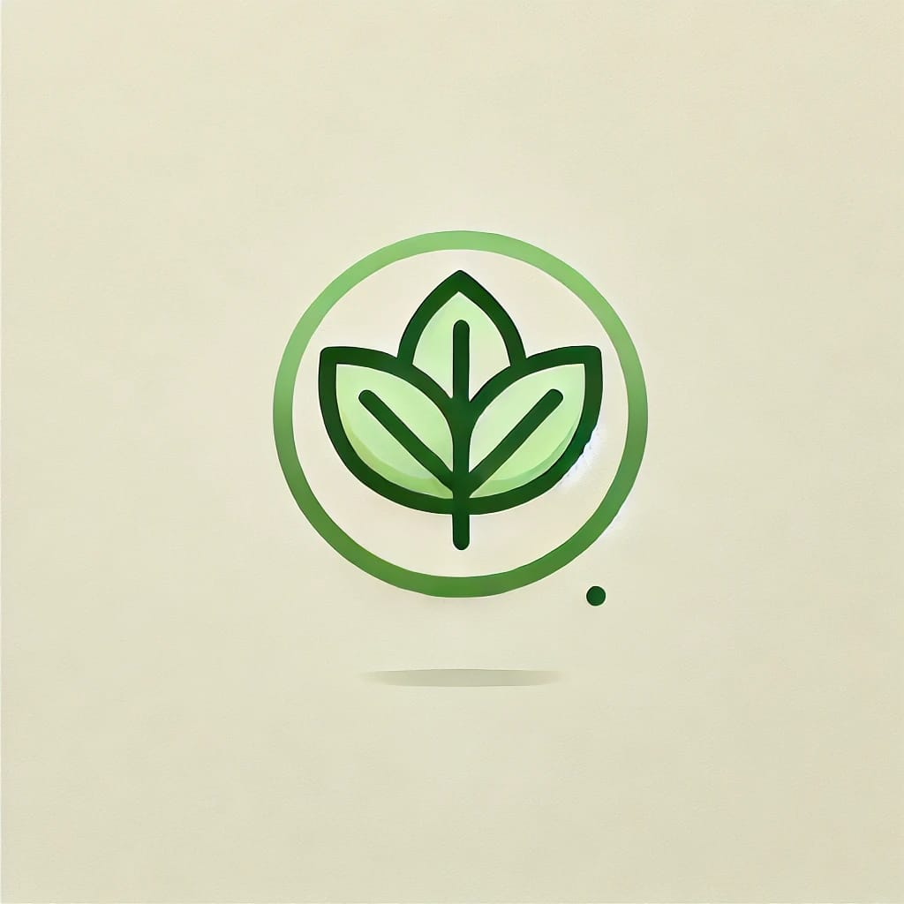

Vegan Dinners
Las mejores recetas veganas
Desayunos
Tostadas de Aguacate con Garbanzos y Espinacas
Ingredientes:
- 2 rebanadas de pan integral o pan sin gluten
- 1 aguacate maduro
- 1/2 taza de garbanzos cocidos
- 1 taza de espinacas frescas
- 1 cucharada de aceite de oliva
- Jugo de 1/2 limón
- Sal y pimienta al gusto
- Pimentón ahumado (opcional)
Instrucciones:
- Preparar las tostadas: Tostar las rebanadas de pan integral hasta que estén crujientes.
- Aguacate: Tritura el aguacate en un bol, añade el jugo de limón, sal y pimienta. Unta esta mezcla sobre las tostadas.
- Garbanzos: Calienta los garbanzos en una sartén con una cucharada de aceite de oliva hasta que estén dorados.
- Espinacas: Agrega las espinacas frescas a la sartén con los garbanzos y cocina hasta que se marchiten.
- Montar las tostadas: Coloca la mezcla de garbanzos y espinacas sobre el aguacate untado en las tostadas.
- Servir: Sirve las tostadas con un poco más de limón o una pizca de pimentón para un toque adicional.
Este desayuno es rico en proteínas, fibra y grasas saludables, ideal para comenzar el día con energía. ¿Te gustaría más ideas de desayunos veganos?